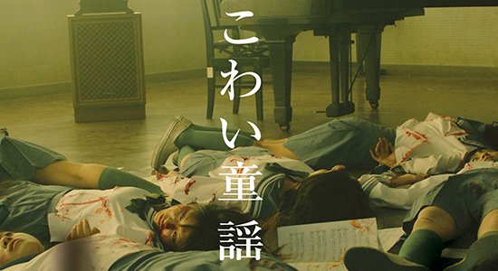
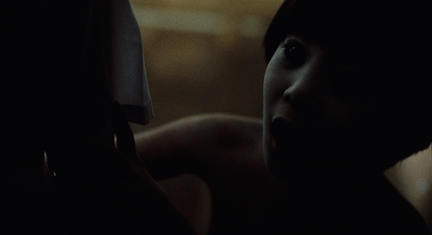

作品紹介
「クロユリ団地」
ハリウッドで活躍中の日本人監督が、老朽化した団地を舞台に描くホラー。「出る」と噂される団地に何も知らずに越してきた二宮明日香。隣室で孤独死した老人を発見した事を機に、彼女のまわりで怪現象が頻発する。
初回放送：1月4日（日）21:00～
「こわい童謡 表の章」

表と裏の二章からなる、童謡を題材にしたホラーサスペンス。
名門女子校の合唱部員・彩音。彼女は奇妙な幻聴に悩まされていた。そんな時、ルームメイトの奈々香が自殺する。それ以来、合唱部員の変死や失踪事件が次々と発生する…
初回放送：1月11日（日）21:00～
「呪怨（ビデオ版）」
ハリウッドでもリメイクされた名作ホラー「呪怨」シリーズの原点となる作品。 小学校教師・小林俊介は学校に来ない生徒・佐伯俊雄の家を訪ねた。そこにはゴミにまみれた俊雄がひとりいるだけだった。小林は彼の母・伽耶子の帰りを待つことにするのだが…
初回放送：1月18日（日）21:00～
「ゴメンナサイ」
女子高生・由香のクラスには、「幽霊」と呼ばれるほど不気味な容姿の比那子がいた。彼女は文化祭の脚本執筆が決まった事により、執拗ないじめを受けるようになる。そして、由香と学園の周囲で不可解な死の連鎖が始まるのだった。
話題のアイドルユニット「Buono！」初主演のホラームービー。
初回放送：1月25日（日）21:00～